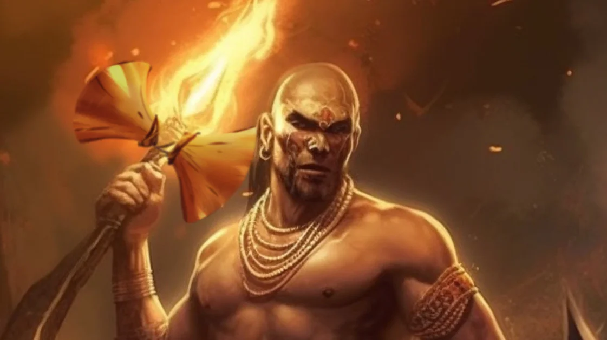

Xangô é um orixá que faz parte das religiões de matriz africana no Brasil. É o orixá dos raios e da justiça, sendo justo, bondoso, forte e ágil, e não tolerando injustiças cometidas por mentirosos e por bandidos. O sincretismo religioso fez com que ele fosse relacionado com o santo católico São Jerônimo.
Conheça como é ser filho de Xangô O filho de Xangô é justo, forte e com grande autoestima. Ele acredita no poder da justiça e se destaca em suas tarefas. As pessoas que vibram na mesma sintonia desse orixá são misteriosas, cumpridores da lei e conhecidos pela fama de namoradeiros.